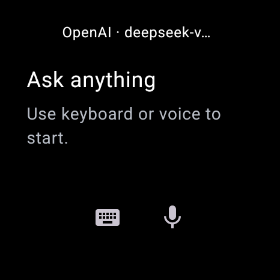
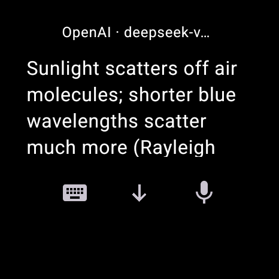
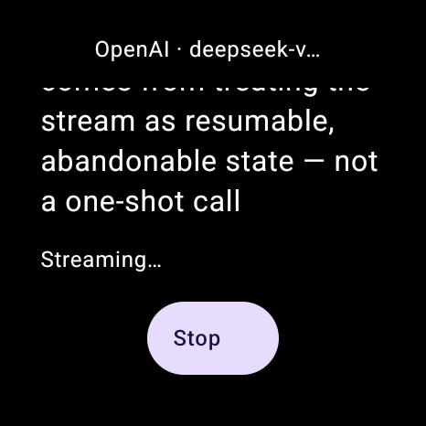
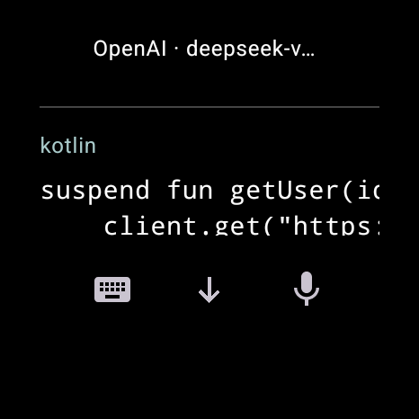
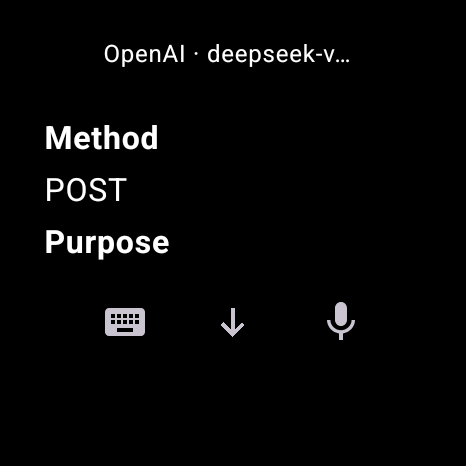
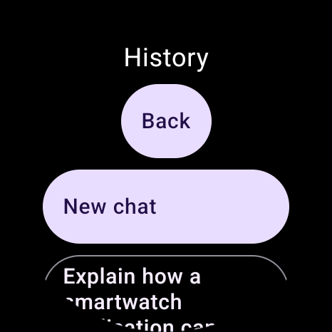

A watch is not a small phone.
Roughly 28 to 34 characters fit on a comfortable line. A round bezel removes the corners. Every design decision in NiroWear follows from those two numbers.
| Property | Value | Consequence |
|---|---|---|
| Viewport | 466 × 466 px, round | Content is inset from a circular bezel, not a rectangle. |
| Line measure | 28–34 characters | Prose reflows into short lines; structure has to do the work. |
| Safe radius | 96 px | Nothing that matters sits outside it. |
| Wide content | Pans, never shrinks | A long formula costs a swipe, not legibility. |
| Tables | Become records | A four-column grid is not a thing this screen can hold. |
| Truncation | Never, by design | The client does not shorten an answer to fit. |
The renderer is the product.
Assistant output is parsed into blocks — paragraph, heading, list, quote, inline code, code block, math, table, divider, link — and each block lays itself out. Raw Markdown is stored, so the renderer can improve without a migration.
| Model | Speed | Context | |---------|-------|---------| | Aurora | Fast | 128k | | Basalt | Slow | 1M | | Cinder | Mixed | 32k |
No cell is dropped and no column is silently hidden. A wide table becomes a list of labelled records, which is the only form that survives a 28-character measure. The bench above runs this same transform on the Long table preset.
Four adapters, four protocols.
The wire format is chosen by the provider type you selected — never inferred from a model name. Each adapter proves completion from its own terminal event, because a stream that simply stops is an interruption, not an answer.
- Protocol
- Responses API ·
POST {base}/responses - Auth
Authorization: Bearer <key>- Terminal event
- response.completed — and the final text it restates must equal the accumulated deltas.
- Refuses to guess
- Unknown events inside the
response.*namespace are treated as informational; anything outside it is fatal.[DONE]and a closed socket are never accepted as success. - Body
store:false,instructions,input[]. Nothing is persisted upstream by this client's request.
- Protocol
- Messages API ·
POST {base}/messages - Auth
Authorization: Bearer <key>plusanthropic-version: 2023-06-01- Terminal event
- message_stop — reachable only after
message_deltareported astop_reasonofend_turn,stop_sequenceorrefusal, and only if text was seen. - Refuses to guess
max_tokensis required, so it is read from the model's own metadata. It is never derived from a model name. When metadata is unavailable the code uses 8192 and says so in a comment — a fallback, not a documented default.- Roles
- Adjacent same-role turns are merged at the wire boundary; canonical history stays provider-neutral.
- Protocol
- GenerateContent over SSE ·
POST {base}/models/{model}:streamGenerateContent?alt=sse - Auth
x-goog-api-key: <key>— not anAuthorizationheader.- Terminal event
- finishReason: "STOP". Every other reason, including
MAX_TOKENS, is a failure rather than a short answer. - Refuses to guess
- Roles must alternate
user/model; the adapter merges adjacent turns instead of hoping the endpoint tolerates them. Error identity is read fromstatusanddetails[].reasonbefore the HTTP code. - Failure map
- HTTP 400 +
status:"INVALID_ARGUMENT"+details[].reason:"API_KEY_INVALID"→ API key rejected, not a bad request. See the worked example below.
- Protocol
- Chat Completions ·
POST {base}/chat/completions - Auth
Authorization: Bearer <key>- Terminal event
- finish_reason: "stop" — the only value treated as success.
- Refuses to guess
- Capabilities are never inferred from a model ID. If discovery fails you type the ID yourself and chat anyway; discovery and authentication are separate checks.
- Base URL
- Validated as an API base, not a request endpoint. Credentials, query strings and fragments are rejected.
POST {base}/models/{model}:streamGenerateContent?alt=sse
x-goog-api-key: <key>
HTTP/1.1 400
{
"error": {
"code": 400,
"status": "INVALID_ARGUMENT",
"details": [ { "reason": "API_KEY_INVALID" } ]
}
}
400 → ProviderError.HTTP
400 + INVALID_ARGUMENT + API_KEY_INVALID → INVALID_CREDENTIAL
Google returns a rejected key as HTTP 400, the same code it uses for a malformed request, so the
status code alone cannot separate “wrong key” from “bad request”. Only
details[].reason carries API_KEY_INVALID. At Anthropic that same 400 means
something else again; at OpenAI it means something else a third time. That is the whole argument for
one adapter per provider type: the mapping is a property of the wire protocol, not of the model
name printed in the picker.
Getting the key onto the watch.
An API key is 40 to 200 opaque characters. Typing that on a 1.4-inch keyboard is not a friction problem, it is a correctness problem — the failure mode is a silent typo. So the transport was fixed, not the keyboard.
Tap “Set up from phone”
The watch opens a one-time listener and shows a short LAN address.
Open it on a device with a real keyboard
Phone or laptop. Pick the provider, paste the key, tap Send.
The page encrypts before it sends
Ephemeral ECDH P-256, then AES-GCM with a 128-bit single-use token as associated data.
The watch saves and validates by itself
Same save path as manual entry, including the promotion probe. The listener closes.
| Lifetime | Foreground only, 120 s, one use |
| Payload | AES-GCM, token compared in constant time before any crypto |
| Body cap | 4 KiB, one connection at a time |
| On failure | Generic rejection; nothing partial is written |
| Permissions | INTERNET only. No new permission was added. |
Plates
Uncropped 466 × 466 captures from the app running against a real HTTPS endpoint. Each one is a scroll viewport, not a claim that a whole answer fits at once.






Install
There is no store listing. Sideload the signed release, or build it yourself from source — the repository compiles the same app.
Download the release, then install over ADB. Upgrading from an earlier beta keeps your conversations — the signing identity is unchanged.
adb install -r NiroWear-0.1.0-beta.6.apk
Signed · non-debuggable · versionCode 7 · sha256 bd9c7eb968dc3b10c873591a79c81987c147980c480620af464dc2c65154fcb9
Needs JDK 25 and Android SDK platform 36. The Gradle wrapper is checked in; do not install Gradle separately.
git clone https://github.com/michaelxdips/NiroWear.git cd NiroWear ./gradlew :app:assembleDebug adb install -r app/build/outputs/apk/debug/app-debug.apk
Debug and release now share one native-math renderer; the old debug-only stub is gone.
Both devices on the same network. The address and port come from the watch's own wireless-debugging screen.
adb pair 192.168.1.50:37123 adb connect 192.168.1.50:5555 adb install -r NiroWear-0.1.0-beta.6.apk
Requires Wear OS 3 (API 30) or newer.
What is not finished.
Stated as facts rather than caveats, because a page that hides these is not worth reading.
- Native math typesetting
- Now in release builds. LaTeX is typeset natively; the fallback only covers input the renderer deliberately refuses, such as file-inclusion macros and unbalanced braces.
- Physical watch acceptance
- Battery, thermals and input on a real Xiaomi Watch 2 are not yet verified. Emulator evidence is extensive; it is not the same thing.
- Voice accuracy
- The intent launch and return path is tested. Recognition quality is the platform's, and has not been accepted.
- Link destinations
- Links open through the system handler. Completion on a real paired device is unverified.
- Screen reader
- TalkBack audio acceptance is incomplete. Headings expose semantics; the full reading order has not been signed off.
- Live provider smoke
- Coverage is against controlled endpoints and one third-party Responses endpoint — not every official provider with production credentials.
What is actually verified.
Every claim on this page, sorted by the strength of the evidence behind it. A badge wall would be shorter and less useful.
| Claim | Evidence | Where |
|---|---|---|
| Four adapters, four distinct wire protocols | Source One class per provider type; request builders and decoders are separate files. | app/src/main/java/com/nirowear/provider/ |
| EOF is never treated as success | Source Each decoder requires its own terminal event; a closed socket without one is a failure. | OpenAiProvider, AnthropicProvider, GeminiProvider, OpenAiCompatibleProvider |
| Renderer emits semantic blocks, never one text node | Source JVM 155 tests / 30 suites, 0 failures, 0 errors, 0 skipped. | ContentBlock.kt; app/build/test-results/testDebugUnitTest/ |
| Native LaTeX typesetting in release builds | Emulator Release APK produced Math canvas nodes for a display integral and inline math; 30 TTF files present. | Release notes, v0.1.0-beta.6 |
| Credential pairing encrypts end to end | Emulator Exercised over loopback only. A real phone on a real LAN has not been tested — the emulator sits behind NAT. | PairingServerTest; beta.5 notes |
| Static analysis is clean | JVM lintDebug: 0 errors, 14 issues — 9 GradleDependency, 4 NewerVersionAvailable, 1 AutoboxingStateCreation. Dependency-freshness notices only; nothing in the app's own code. | app/build/reports/lint-results-debug.xml |
| Touch reach, battery and thermals on a real watch | Unverified No physical Xiaomi Watch 2 is attached to the build machine. | — |
| Voice transcription accuracy | Unverified Intent dispatch is tested; recognition quality belongs to the platform and was not measured. | — |
| Link taps reach a destination on a paired device | Unverified Unit-tested; the emulator has no ACTION_VIEW handler to observe. | — |
| TalkBack reads the full answer in order | Unverified Semantics and target geometry are tested; audio output was never listened to. | — |
| Every official provider works with production credentials | Partial Controlled endpoints plus one third-party Responses endpoint. Not a live sweep of all four. | docs/memory/PROVIDERS.md |
The JVM and lint figures above were read from the result XML produced by a forced re-run on 2026-10-22 at 21:07, not quoted from memory. The connected-test suite is deliberately absent from this table: its last recorded run was on the emulator, and it was not re-run while this page was written, so presenting it as current would be the exact kind of claim this section exists to prevent. Test sources are not published in this repository by policy, so the result XML is not linkable from here.